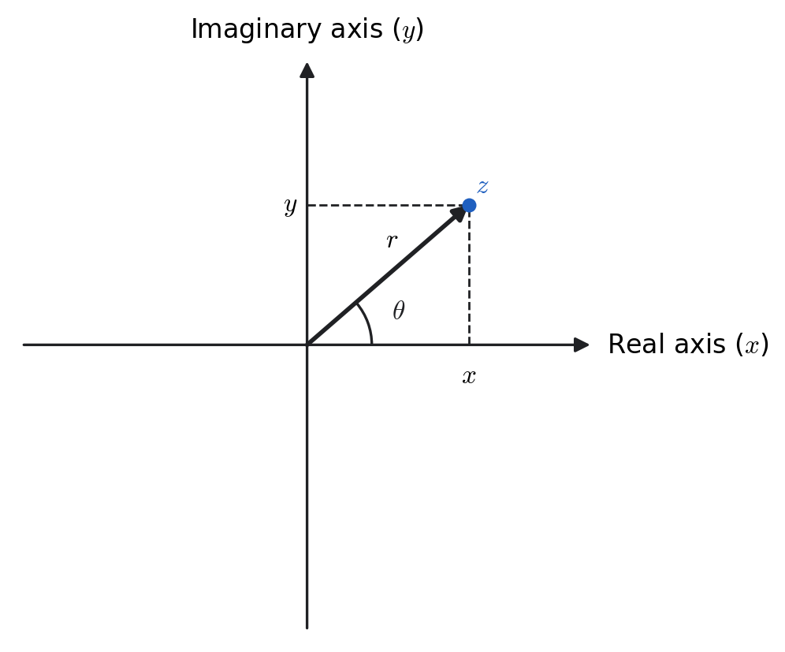
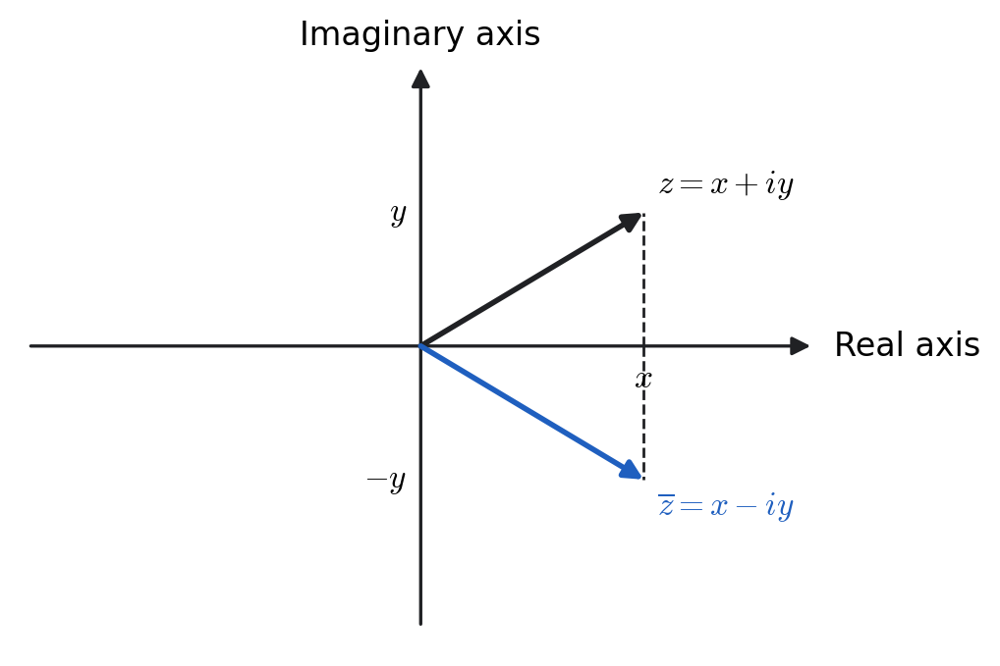
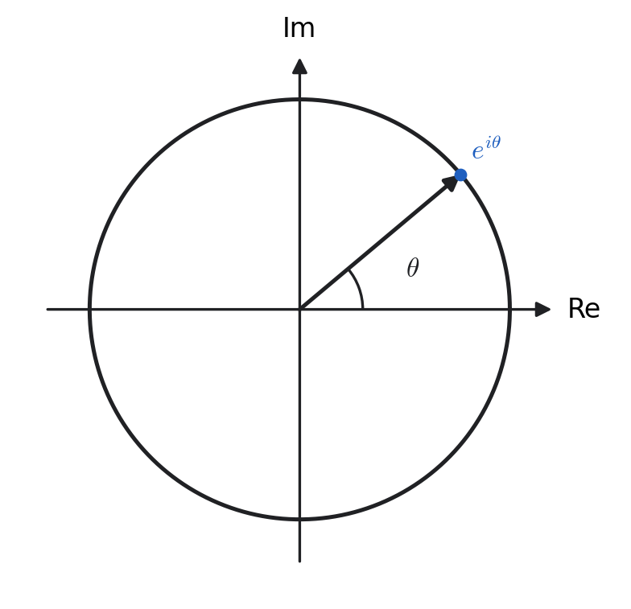

Chapter 2
Complex Numbers
Introduction to Complex Numbers
Motivation
In algebra, the quadratic formula
provides the general solution of a quadratic equation
When the discriminant
is negative, the square root involves a negative number. To extend the number system so that such roots exist, we introduce a new quantity:
A complex number is any number of the form
where \(x, y \in \mathbb{R}\) and \(i\) is the imaginary unit defined by \(i^2 = -1\).
\(x\) is the real part of \(z\): \(\operatorname{Re}(z) = x\).
\(y\) is the imaginary part of \(z\): \(\operatorname{Im}(z) = y\).
Both \(x\) and \(y\) may be positive, negative, or zero.
Special Cases
If \(y = 0\), then \(z\) is purely real: \(z = x\).
If \(x = 0\) and \(y \neq 0\), then \(z\) is purely imaginary: \(z = i y\).
\(z = 4 + 3i\): \(\operatorname{Re}(z) = 4\), \(\operatorname{Im}(z) = 3\).
\(z = -5i\): \(\operatorname{Re}(z) = 0\), \(\operatorname{Im}(z) = -5\) (pure imaginary).
\(z = 7\): \(\operatorname{Re}(z) = 7\), \(\operatorname{Im}(z) = 0\) (pure real).
\(z = -2 + i\sqrt{5}\): \(\operatorname{Re}(z) = -2\), \(\operatorname{Im}(z) = \sqrt{5}\).
Express \(\sqrt{-50}\) in the form \(x + iy\).
Solution.
Motivation from Algebra
Consider
Applying the quadratic formula:
The solutions \(1 \pm i\) are complex numbers with both real and imaginary parts nonzero.
Solve \(z^2 + z + 1 = 0\).
Solution.
Thus, the solutions are
The Complex Plane
A complex number \(z = x + iy\) can be represented as a point \((x, y)\) in a two-dimensional coordinate plane, called the complex plane or Argand diagram.
The horizontal axis represents the real part \(x = \operatorname{Re}(z)\).
The vertical axis represents the imaginary part \(y = \operatorname{Im}(z)\).
When we write \(z = x + iy\), we say \(z\) is in rectangular form, because \((x, y)\) are the rectangular coordinates of the point representing \(z\).
We can also locate a point using polar coordinates \((r, \theta)\):
Then
Later we will see that \(\cos\theta + i \sin\theta = e^{i\theta}\), giving the compact form
Diagram of the Complex Plane

Radians vs Degrees
In calculus and advanced mathematics, radians are the standard measure for angles.
Many formulas, such as \(\frac{d}{dx} \sin x = \cos x\), are valid only if \(x\) is in radians.
For computation, degrees can be used if the context allows, but be careful when substituting into formulas derived with radians.
Worked Examples
Represent \(1 + i\sqrt{3}\) in polar form.
Solution.
Thus:
Convert \(3 e^{-i\pi/2}\) to rectangular form.
Solution.
So:
Terminology and Notation
For a complex number
we write:
The angle is only fixed up to whole turns, since \(\theta\) and \(\theta + 2\pi\) name the same point. So \(\arg(z)\) is multivalued: it stands for the whole family \(\theta + 2n\pi\), \(n \in \mathbb{Z}\). The principal argument, written with a capital \(\mathrm{A}\), is the one member of that family lying in a chosen half-open interval of length \(2\pi\):
Throughout this chapter, lower case means all values and upper case means the principal one:
The distinction looks pedantic now, but it is exactly what makes \(\ln(-1)\) and \(i^{\,i}\) have infinitely many values later in the chapter.
A calculator's \(\arctan(y/x)\) always returns an angle in \((-\pi/2, \pi/2]\), so it cannot tell \(z\) from \(-z\): the points \(1+i\) and \(-1-i\) give the same ratio \(y/x = 1\). Always sketch \(z\) first and correct the quadrant by adding \(\pi\) when \(x < 0\).
Complex Conjugate
The complex conjugate of a complex number \(z = x + iy\) is defined by
Geometrically, \(\overline{z}\) is the reflection of the point \(z\) across the real axis in the complex plane.

Basic Identities
For all \(z,w\in\mathbb{C}\):
Useful reconstructions:
Worked Examples
Write \(z=-1-i\) in polar form.
Solution.
Hence
Let \( z=\dfrac{2-3i}{1+i} \). Compute \( |z| \), \( \operatorname{Re}(z) \), and \( \operatorname{Im}(z) \).
Solution.
Thus \( \operatorname{Re}(z)=-\tfrac{1}{2},\ \operatorname{Im}(z)=-\tfrac{5}{2} \), and
(Alternatively, \( |z|=\sqrt{z\overline{z}} \).)
Quick Facts
Multiplication/division in polar form:
\begin{equation} (r_1e^{i\theta_1})(r_2e^{i\theta_2})=(r_1r_2)e^{i(\theta_1+\theta_2)},\quad \frac{r_1e^{i\theta_1}}{r_2e^{i\theta_2}}=\left(\frac{r_1}{r_2}\right)e^{i(\theta_1-\theta_2)}. \end{equation}Conjugation in polar form: \( \overline{re^{i\theta}}=re^{-i\theta} \).
Equality: \( z_1=z_2 \iff \operatorname{Re}(z_1)=\operatorname{Re}(z_2)\ \text{and}\ \operatorname{Im}(z_1)=\operatorname{Im}(z_2) \).
Complex Algebra
In this section, we develop the algebraic techniques needed to manipulate complex numbers in both rectangular form \(x + iy\) and polar form \(re^{i\theta}\). The key operations include:
addition and subtraction,
multiplication and division,
complex conjugation and absolute value,
converting between \(x+iy\) and \(re^{i\theta}\),
solving equations involving complex numbers,
interpreting algebraic relationships geometrically in the complex plane.
These tools allow us to treat complex numbers as a natural extension of real numbers while benefiting from their geometric interpretation.
Simplifying to \(x+iy\) or \(re^{i\theta}\)
For \(z_1=x_1+iy_1\) and \(z_2=x_2+iy_2\):
To divide, multiply numerator and denominator by the conjugate of the denominator:
\( \dfrac{2+i}{3-i} = \dfrac{(2+i)(3+i)}{(3-i)(3+i)} = \dfrac{6+5i+i^2}{3^2-(-1)} = \dfrac{5+5i}{10} = \frac12+\frac12 i. \)
Conjugates of Expressions
The conjugate distributes over sums/products/quotients:
Absolute Value (Modulus)
\( \displaystyle \left|\frac{\sqrt{5}+3i}{\,1-i\,}\right| =\frac{\sqrt{(\sqrt{5})^2+3^2}}{\sqrt{1^2+(-1)^2}} =\frac{\sqrt{14}}{\sqrt{2}}=\sqrt{7}. \)
Complex Equations
Two complex numbers are equal iff their real parts are equal and their imaginary parts are equal. Often, write \(z=x+iy\) and split into real/imaginary equations.
Solve \((x+iy)^2=2i\) for real \(x,y\).
Solution.
Equate real and imaginary parts:
From \(x^2-y^2=(x-y)(x+y)=0\) we have \(y=x\) or \(y=-x\).
Case 1: \(y=x\). Then \(2xy=2\Rightarrow 2x^2=2\Rightarrow x^2=1\). Hence \(x=\pm 1\) and \(y=x\). This gives \(1+i\) and \(-1-i\).
Case 2: \(y=-x\). Then \(2xy=2\Rightarrow 2x(-x)=2\Rightarrow -2x^2=2\Rightarrow x^2=-1\), which is impossible for real \(x\). So no solutions from this branch.
Therefore the solutions are
i.e. \(z=1+i\) and \(z=-1-i\).
Check. \((1+i)^2=1+2i-1=2i\) and \((-1-i)^2=1+2i-1=2i\).
(Alternative via polar form.) \(2i=2e^{i\pi/2}\). Square roots have modulus \(\sqrt{2}\) and arguments \(\frac{\pi}{4}\) and \(\frac{\pi}{4}+\pi\), giving \(\sqrt{2}e^{i\pi/4}=1+i\) and \(\sqrt{2}e^{i5\pi/4}=-1-i\).
Graphs (Geometry in the Complex Plane)
Identify loci via \(z=x+iy\), \(|z|=\sqrt{x^2+y^2}\), and distances:
\(|z-1|=2\) is the set of points at distance \(2\) from \(1\), i.e. the circle \((x-1)^2+y^2=4\).
\(\arg z = \pi/4\) is the ray \(y=x\) with \(x>0\) — a ray, not the whole line, because the argument of a point on the opposite side is \(\pi/4 - \pi = -3\pi/4\).
\(|z-1| < |z+1|\) is the set of points closer to \(1\) than to \(-1\), which is the half-plane \(x > 0\).
Complex Infinite Series
A complex series is an expression of the form
Let
be the sequence of partial sums. If the limit
exists and is a finite complex number \(S\), then the series converges, and we write
If the limit does not exist or is not finite, the series diverges.
Let \(z_n = a_n + i b_n\) with \(a_n, b_n \in \mathbb{R}\). Then
In that case, the sum satisfies
In practice, check convergence of the real and imaginary parts separately, or use absolute convergence to simplify the test.
A complex series \(\displaystyle \sum z_n\) is said to be absolutely convergent if the series
converges, where
If \(\sum |z_n|\) converges, then the complex series \(\sum z_n\) also converges. In other words,
Moreover, any standard convergence test for real, non-negative series may be applied to the series \(\sum |z_n|\).
Worked Examples
Test
Here
Thus the series converges absolutely (and hence converges).
Test
The terms cycle through \(i,-1,-i,1,\dots\). Real part: \(\sum \frac{\pm 1}{\sqrt{n}}\) alternating — converges by the alternating series test. Imaginary part: \(\sum \frac{\pm 1}{\sqrt{n}}\) alternating — also converges. Hence the series converges (conditionally, not absolutely).
converges iff \(|r|<1\), in which case
Quick Facts
For the ratio test applied to \(\sum z_n\):
If \(\rho < 1\), the series converges absolutely.
If \(\rho > 1\), the series diverges.
If \(\rho = 1\), the test is inconclusive — real and imaginary parts must be checked separately.
Complex Power Series: Disk of Convergence
A complex power series centered at \(z_0\) has the form
It converges for all \(z\) within some disk centered at \(z_0\), and diverges for all \(z\) outside that disk.
Radius and Disk of Convergence
If
with conventions:
A complex power series converges absolutely when
and diverges when
The set
is called the disk of convergence. On the boundary \(|z-z_0| = R\), convergence must be tested separately.
Ratio test:
Thus \(R = 1\), so the disk of convergence is \(|z|<1\).
Ratio test:
Thus convergence requires \(|z+1-i| < 3\). The disk is centered at \(z_0 = -1 + i\) with radius \(R = 3\).
If \(R = \infty\), the power series converges for all \(z \in \mathbb{C}\). In this case, the function defined by the series is called entire.
If \(R = 0\), the series converges only at the center \(z = z_0\).
For all \(z\) with \(|z - z_0| < R\), convergence is uniform on compact subsets of the disk. Term-by-term differentiation and integration are therefore valid within this region (see Theorem in Section 2.4).
Euler's Formula
For any real angle \(\theta\),
This identity connects the complex exponential with the trigonometric functions and plays a central role in oscillations, waves, quantum mechanics, and electrical engineering.
Proof Using Power Series
We will:
Start from the power series definition of \(e^{x}\) and substitute \(x = i\theta\).
Expand \((i\theta)^n\) and separate the terms with even and odd powers of \(n\).
Simplify powers of \(i\) and identify the real and imaginary parts with the known series for \(\cos\theta\) and \(\sin\theta\).
Step 1. Start from the series for \(e^{x}\).
For any real (or complex) number \(x\),
Substitute \(x = i\theta\) (with \(\theta \in \mathbb{R}\)):
Step 2. Write out the first few terms explicitly.
Now expand the powers of \(i\):
So we obtain:
Step 3. Group real and imaginary terms.
Group all the terms without \(i\) (real part) and all the terms with a factor \(i\) (imaginary part):
Thus we can write
where
Step 4. Recall the power series for \(\cos\theta\) and \(\sin\theta\).
From earlier results on Maclaurin series:
Comparing term by term, we see
Therefore,
which completes the proof.
Geometric Meaning
Euler’s formula shows that \(e^{i\theta}\) lies on the unit circle in the complex plane:
Thus multiplying by \(e^{i\theta}\) corresponds to a rotation by angle \(\theta\) about the origin.

Applications of Euler's Formula
Any nonzero complex number \(z\) can be written as
This is the polar form of \(z\).
If \(z_1 = r_1 e^{i\theta_1}\) and \(z_2 = r_2 e^{i\theta_2}\), then
Thus multiplication adds angles, and division subtracts angles.
The \(n\)-th roots of \(1\) are
which are equally spaced points on the unit circle.
Two sources produce oscillations of the same frequency \(\omega\) but different amplitudes and phases,
Find their sum. This is the central calculation in interference and in AC circuit analysis.
Solution.
Done with trigonometric identities this is tedious. The complex method is to notice that, by Euler's formula, \(A\cos(\omega t+\phi)\) is the real part of \(A e^{i(\omega t + \phi)}\). So write each wave as the real part of a complex exponential and add:
The time dependence \(e^{i\omega t}\) factors out completely, and everything specific to the two waves is collected in the bracket
called the phasor of the combined wave. Adding two oscillations has been reduced to adding two complex numbers — that is, to placing two arrows tip to tail in the complex plane. Reading off the modulus and argument of the sum,
and the answer is \(y_1 + y_2 = A\cos(\omega t + \phi)\): the sum is another oscillation at the same frequency, with a new amplitude and phase.
Two special cases are worth noting. If \(\phi_1 = \phi_2\) the phasors are parallel and \(A = A_1 + A_2\) — constructive interference. If \(\phi_2 = \phi_1 + \pi\) they are antiparallel and \(A = |A_1 - A_2|\) — destructive interference, which vanishes entirely when the amplitudes are equal.
Write \(1+i\) in polar form.
Solution.
The point \(1+i\) sits in the first quadrant, so \(\arctan\) needs no quadrant correction:
Thus
Polar form is what makes powers and roots easy; we use this result in Section 2.8.
Compute \((1+i)^8\).
Solution.
Using the polar form just found, raising to a power multiplies the angle by the exponent and raises the modulus to it:
The angle \(8\pi/4 = 2\pi\) is a full turn, which returns to the positive real axis — so the answer is real. Doing this by repeated multiplication in rectangular form would take eight expansions.
Find the cube roots of \(8e^{i\pi}\).
Solution.
Here \(r=8\) and \(\theta=\pi\). Taking the cube root divides the angle by \(3\), but the angle is only defined up to \(2\pi\), so all three choices must be included:
Writing out the three values,
They all have modulus \(2\) and are spaced \(2\pi/3\) apart, so they sit at the vertices of an equilateral triangle on the circle of radius \(2\).
Elementary Functions of Complex Numbers
We extend familiar real-valued functions such as the exponential, logarithmic, and trigonometric functions to complex inputs \(z \in \mathbb{C}\).
These generalizations are most naturally defined using their power series expansions, since power series:
converge for complex numbers in the same region as for real numbers,
preserve key algebraic identities (e.g., \(e^{z+w} = e^z e^w\)),
allow term-by-term differentiation and integration inside their disks of convergence.
Polynomials and Rational Functions
Polynomials and quotients of polynomials in \(z\) are handled by direct substitution and algebra.
Take for example \( f(z)=\dfrac{z^2+1}{z-3} \). Find \( f(i-2) \).
Multiply numerator and denominator by the conjugate \(-i-5\):
Expand the numerator and simplify:
Denominator:
Therefore
The Exponential Function
The exponential function for \(z \in \mathbb{C}\) is defined by the power series
This series converges for all complex numbers \(z\).
For all complex numbers \(z, z_1, z_2 \in \mathbb{C}\),
\(e^{z_1+z_2} = e^{z_1}e^{z_2}\),
\(\dfrac{d}{dz}(e^{z}) = e^{z}\),
If \(z = x + iy\), then \(e^z = e^x(\cos y + i\sin y)\).
(a) Show that \(e^{z_1+z_2} = e^{z_1}e^{z_2}\).
Expand each exponential:
Similarly,
Multiplying out gives:
Each coefficient matches term-by-term the expansion of \(e^{z_1+z_2}\). Thus,
(b) Show that \(\dfrac{d}{dz}(e^{z}) = e^{z}\).
Differentiate term-by-term:
Simplify:
(c) Simplify \(e^z\) into real and imaginary parts.
Let \(z = x + iy\). Then
Using Euler’s formula:
So,
Compute \( e^{2+i}\,e^{-1+3i} \) without expanding series.
Solution.
Use property (a) to add exponents first, then property (c) to separate real and imaginary parts:
Note the division of labour in \(e^{x+iy} = e^x(\cos y + i \sin y)\): the real part of the exponent sets the size \(e^x\), and the imaginary part sets the angle \(y\). This one fact drives the rest of the chapter.
A resistor \(R\), an inductor \(L\) and a capacitor \(C\) are connected in series across a voltage source \(V(t) = V_0\cos(\omega t)\). Find the amplitude of the resulting current.
Solution.
The physical difficulty is that the three components respond differently: the voltage across a resistor is in phase with the current, across an inductor it leads by \(\pi/2\), and across a capacitor it lags by \(\pi/2\). Combining three oscillations with different phase shifts is exactly the problem of the previous phasor example.
Represent the voltage as \(\operatorname{Re}\big[V_0 e^{i\omega t}\big]\) and look for a current \(\operatorname{Re}\big[I_0 e^{i\omega t}\big]\). Because \(\frac{d}{dt}e^{i\omega t} = i\omega e^{i\omega t}\), differentiation becomes multiplication by \(i\omega\), and each component contributes a complex impedance \(Z\) with \(V = ZI\):
The factor \(i\) is doing the physics: multiplying by \(i = e^{i\pi/2}\) is a rotation by a quarter turn, which is precisely the \(\pi/2\) phase shift. In series the impedances add just as resistances do:
The current amplitude is then \(I_0 = V_0/|Z|\), so
The current is largest when the imaginary part of \(Z\) vanishes, at \(\omega = 1/\sqrt{LC}\) — this is resonance, and it is how a radio selects one station out of many. A differential equation has been replaced by the arithmetic of complex numbers.
Powers and Roots of Complex Numbers
Using the rules for multiplication and division of complex numbers in polar form, let
For any integer \(n\),
In words: to take the \(n\)-th power of a complex number, raise the modulus to the \(n\)-th power and multiply the angle by \(n\).
When \(r=1\), this becomes De Moivre's formula:
De Moivre's formula is a machine for trigonometric identities. Expanding the left side of \(\eqref{eq:de_moivre}\) for \(n=2\) gives \(\cos^2\theta - \sin^2\theta + 2i\sin\theta\cos\theta\), and matching real and imaginary parts against \(\cos 2\theta + i \sin 2\theta\) yields both double-angle formulas at once, with no trigonometry at all.
The \(n\)-th root of \(z\), written \(z^{1/n}\), is a complex number whose \(n\)-th power is \(z\). From \(\eqref{eq:complex_power}\), the \(n\)-th roots of \(z = r e^{i\theta}\) are
where \( m = 0,1,\dots,n-1 \)
Compute \((1+i)^8\).
Write
Then
Compute \((-\sqrt{3}+i)^3\).
Here
Thus
Fourth roots of \(-16\).
We write
With \(n=4\), the roots are
Explicitly:
Cube roots of \(8e^{i\pi}\).
Here \(r = 8\), \(\theta = \pi\), \(n=3\). Thus
i.e.
Solve \(w^5=1\).
We write
Then the solutions are
These five points form a regular pentagon on the unit circle.
Trigonometric Functions of a Complex Variable
Recall that Euler’s formula gives
Adding and subtracting these expressions,
For any complex number \(z = x + iy \in \mathbb{C}\),
These formulas extend the real trigonometric functions to complex arguments while preserving their power series definitions and their analytic properties.
\(\displaystyle \cos(2i)=\frac{e^{i(2i)}+e^{-i(2i)}}{2} =\frac{e^{-2}+e^{2}}{2}\equiv \cosh(2)=3.762\ldots\)
\(\displaystyle \sin\!\Big(\frac{\pi}{2}+i\ln(2)\Big)\)
\begin{equation} \begin{aligned} \sin\!\Big(\tfrac{\pi}{2}+i\ln(2)\Big) &=\frac{e^{\,i(\pi/2+i\ln(2))}-e^{-\,i(\pi/2+i\ln(2))}}{2i}\\[2mm] &=\frac{e^{\,i\pi/2-\ln(2)}-e^{-\,i\pi/2+\ln(2)}}{2i}\\[2mm] &=\frac{i\,e^{-\ln|2|}+\,i\,e^{\ln(2)}}{2i} \qquad(\text{since }e^{i\pi/2}=i,\ e^{-i\pi/2}=-i)\\[2mm] &=\frac{i\cdot\frac{1}{2}+2i}{2i} =\Big(\frac{1}{2}+2\Big)\frac{1}{2} =\frac{1}{4}+1=\boxed{\frac{5}{4}}. \end{aligned} \end{equation}
Prove that \(\sin^{2}(z)+\cos^{2}(z)=1\) for every complex \(z\).
Solution.
Adding the two, the \(e^{2iz}\) and \(e^{-2iz}\) terms cancel and only the constants survive:
Note this is now an algebraic fact about exponentials, with no triangles anywhere. It holds for all complex \(z\), even where \(|\sin z|\) exceeds \(1\).
Show that \(\dfrac{d}{dz}\cos(z)=-\sin(z)\).
Solution.
Hyperbolic Functions
Assume \(z = iy\) is purely imaginary. Recall the complex definitions:
Relation with Imaginary Arguments
Compute:
and
For any real number \(y\),
Equivalently,
For any complex number \(z \in \mathbb{C}\), define
From these:
Show that \(\cosh^2(z)-\sinh^2(z)=1\)
Hence
Logarithms of Complex Numbers
If \(z = e^\omega\), then we define the complex logarithm by \(\ln(z) = \omega\).
Logarithm of a Product
Let \(z_1 = e^{\omega_1}\) and \(z_2 = e^{\omega_2}\). Then
For a complex number \(z = re^{i\theta}\) with \(r = |z| > 0\),
Because the angle \(\theta\) is not unique (adding \(2\pi\) leaves the same point), the logarithm is a multivalued function:
We define the principal branch of the logarithm by restricting the argument:
Here \(\Theta = \mathrm{Arg}(z)\) is the principal argument, defined at the start of this chapter as the unique value of \(\arg(z)\) lying in \((-\pi,\pi]\).
Find all values of \(\ln(-1)\).
Solution.
Write \(-1\) in polar form. Its modulus is \(1\) and its argument is \(\pi\), but any odd multiple of \(\pi\) names the same point:
\begin{equation} -1 = e^{i(2n+1)\pi}, \qquad n \in \mathbb{Z}. \end{equation}Therefore
\begin{equation} \ln(-1) = \ln(1) + i(2n+1)\pi = i(2n+1)\pi, \qquad n \in \mathbb{Z}, \end{equation}that is
\begin{equation} \ln(-1) = \ldots,\ -i3\pi,\ -i\pi,\ i\pi,\ i3\pi,\ \ldots \quad\text{and}\quad \mathrm{Ln}(-1) = i\pi , \end{equation}the principal value being the one with \(\Theta = \pi \in (-\pi, \pi]\), which is the case \(n = 0\). Note that \(\ln(-1)\) has no real values at all: the logarithm of a negative number does not exist in \(\mathbb{R}\), but it exists, infinitely many times over, in \(\mathbb{C}\).
Find all values of \(\ln(1+i)\).
Solution.
Here \(|1+i| = \sqrt2\) and \(\arg(1+i) = \pi/4\), so
\begin{equation} \ln(1+i)=\ln\sqrt{2}+i\bigg(\frac{\pi}{4}+2n\pi\bigg),\qquad n\in\mathbb{Z}, \end{equation}with principal value \(\mathrm{Ln}(1+i) = \tfrac12\ln 2 + i\pi/4\).
Complex Roots and Powers
Consider \(\ln(a^{b})=b\ln(a)\Rightarrow a^{b}=e^{\,b\ln(a)}\).
Find all the values of \(i^{-2i}\):
\begin{equation} i^{-2i}=e^{-2i\ln(i)} =e^{-2i\,[\,\ln(1)+(\tfrac{\pi}{2}+2\pi n)i\,]} =e^{\,2(\tfrac{\pi}{2}+2\pi n)} =e^{\,\pi+4\pi n},\qquad n\in\mathbb{Z}. \end{equation}\(i^{1/2}\):
\begin{equation} i^{1/2}=e^{(1/2)\ln(i)} =e^{\frac{1}{2}\,[\,\ln(1)+(\tfrac{\pi}{2}+2\pi n)i\,]} =e^{\,i(\tfrac{\pi}{4}+\pi n)} =e^{\,i\pi/4}\,e^{\,i\pi n} =\pm\,\frac{1+i}{\sqrt{2}}. \end{equation}
Inverse trigonometric functions
Let
Solve \(z=\cos^{-1}(2)\).
Solution.
For a real variable this has no solution, since \(\cos x\) never exceeds \(1\). Over \(\mathbb{C}\) it does. Start from the definition of \(\cos z\) and put \(U = e^{iz}\):
Multiplying through by \(U\) turns this into a quadratic:
So \(e^{iz}=2\pm\sqrt{3}\), a positive real number. Taking the complex logarithm, and remembering it is multivalued,
Dividing by \(i\) (that is, multiplying by \(-i\)),
Finally, note that \((2+\sqrt3)(2-\sqrt3) = 4 - 3 = 1\), so the two numbers are reciprocals and \(\ln(2-\sqrt{3})=-\ln(2+\sqrt{3})\). The two sign choices therefore collapse into a single \(\pm\):
The answer is genuinely complex, with no real part other than \(2n\pi\): asking for an angle whose cosine is \(2\) forces us off the real axis.
Inverse hyperbolic functions can be written as logarithms in the same way. This explains a formula you may have met in a table of integrals without justification:
Show that \(\sinh^{-1}(x/a) = \ln\big(x+\sqrt{x^2+a^2}\big) - \ln a\).
Solution.
Let \(z=\sinh^{-1}\!\big(\frac{x}{a}\big)\). Then
Only the \(+\) sign is admissible: with the \(-\) sign the bracket is negative, and a real logarithm would not exist. Absorbing the constant \(-\ln a\) into the constant of integration gives the table entry:
Applications of Complex Numbers
Complex numbers were introduced in this chapter to make \(\sqrt{-1}\) meaningful, which sounds like a formal convenience. Their real value in physics is different and larger: oscillation and rotation are the same thing, and \(e^{i\theta}\) is the object that says so. Every application below is a consequence of that single fact.
Oscillations and waves. Any quantity varying as \(A\cos(\omega t + \phi)\) is the real part of \(Ae^{i\phi}e^{i\omega t}\). Adding oscillations becomes adding complex numbers, as in the phasor example of Section 2.5.
AC circuits. Differentiation becomes multiplication by \(i\omega\), so differential equations become algebra and impedance replaces resistance.
Quantum mechanics. The wavefunction is complex by nature, not by convenience. A free particle is \(\psi \sim e^{i(kx-\omega t)}\), and the phase carries the interference that produces all quantum behaviour (Chapters 12–13).
Fourier analysis. Chapter 7 writes periodic functions as sums of \(e^{in\omega t}\), which is far cleaner than working with \(\sin\) and \(\cos\) separately.
Stability and normal modes. Solutions behaving as \(e^{\lambda t}\) with complex \(\lambda\) oscillate at rate \(\operatorname{Im}\lambda\) and grow or decay at rate \(\operatorname{Re}\lambda\), so a single complex number encodes both (Chapters 3 and 8).
Notice what happened to the exponential and trigonometric functions in this chapter. Over \(\mathbb{R}\) they look unrelated: one grows, the others oscillate. Over \(\mathbb{C}\) they are the same function seen along different directions, tied together by \(e^{iz}\), and \(\cosh\) and \(\cos\) differ only by which axis you walk along. Extending to complex numbers did not add complication; it removed a distinction that was never really there.
Summary Table
| Quantity | Formula | Notes |
| Rectangular form | \(z = x + iy\) | Best for adding and subtracting. |
| Polar form | \(z = re^{i\theta} = r(\cos\theta + i\sin\theta)\) | Best for multiplying, dividing, powers and roots. |
| Modulus | \(|z| = \sqrt{x^2+y^2} = \sqrt{z\bar z}\) | \(|z_1z_2| = |z_1||z_2|\). |
| Conjugate | \(\bar z = x - iy = re^{-i\theta}\) | Reflection across the real axis. |
| Argument | \(\arg z = \mathrm{Arg}\,z + 2n\pi\) | Multivalued; \(\mathrm{Arg}\,z \in (-\pi,\pi]\). |
| Euler's formula | \(e^{i\theta} = \cos\theta + i\sin\theta\) | Ties oscillation to rotation. |
| Powers | \(z^n = r^n e^{in\theta}\) | De Moivre when \(r=1\). |
| Roots | \(z^{1/n} = r^{1/n}e^{i(\theta+2\pi m)/n}\) | \(n\) distinct roots, \(m = 0,\dots,n-1\). |
| Trigonometric | \(\cos z = \frac{e^{iz}+e^{-iz}}{2}\), \(\sin z = \frac{e^{iz}-e^{-iz}}{2i}\) | Unbounded for complex \(z\). |
| Hyperbolic | \(\cos(iy) = \cosh y\), \(\sin(iy) = i\sinh y\) | Same function, rotated axis. |
| Logarithm | \(\ln z = \ln|z| + i\arg z\) | Infinitely many values. |
| Complex power | \(a^b = e^{\,b\ln a}\) | Generally multivalued. |
For the Interested Reader
Complex numbers are usually met first in an algebra course, where they can seem like a trick for writing down roots that do not exist. If that is how they still feel, the sources below are worth an hour. Everything listed is free.
Algebra and geometry of complex numbers
Paul's Online Math Notes — Complex Numbers Primer. The closest match to our treatment, and the most efficient source of extra practice: the basics, arithmetic, polar and exponential form and powers and roots.
OpenStax, Precalculus. 3.1 Complex Numbers and 8.5 Polar Form of Complex Numbers — slower and more elementary than we are here, with many worked exercises.
Khan Academy. Complex numbers — short videos with practice, good for drilling arithmetic and polar conversion.
Euler's formula and where it leads
Sections 2.5 onward.
3Blue1Brown derives \(e^{i\theta}\) from a differential equation rather than from two power series, which is closer to how it is actually used in physics. Worth watching if Euler's formula still feels like an accident:
\(e^{i\pi}\) in 3.14 minutes, using dynamics — 3Blue1Brown
 Watch on YouTube
Watch on YouTube
A caution, as in Chapter 1. Most of these are mathematics sources, concerned with what complex numbers are. In this course they are mainly a device: a way to turn differential equations into algebra and trigonometric identities into arithmetic. If a source spends its time on the algebraic completeness of \(\mathbb{C}\), that is interesting but it is not what we will use.